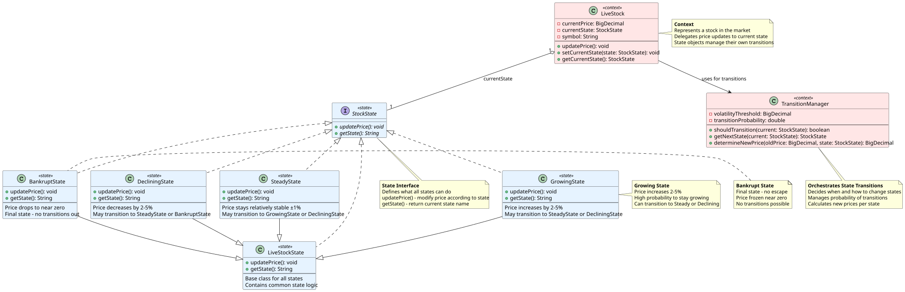

Hvilket problem løser State Pattern?

Software Design og Test

State Interface: src/domain/StockState.java
Context: src/business/stockmarket/simulation/LiveStock.java
Concrete States: src/business/stockmarket/simulation/
// PROBLEM: Al tilstandslogik samlet i én metode
public class LiveStock {
private StockState state; // enum: STEADY, GROWING, DECLINING, BANKRUPT
public void updatePrice() {
if (state == StockState.BANKRUPT) {
return;
} else if (state == StockState.GROWING) {
price = price.multiply(new BigDecimal("1.02"));
if (price.compareTo(peakPrice) > 0)
state = StockState.DECLINING; // manuel tilstandsskift
} else if (state == StockState.DECLINING) {
price = price.multiply(new BigDecimal("0.98"));
if (price.compareTo(new BigDecimal("1.00")) < 0)
state = StockState.BANKRUPT; // manuel tilstandsskift
} else if (state == StockState.STEADY) {
// tjekker alle grene — gør ingenting
}
// Ny tilstand? → Redigér DENNE metode ← Open/Closed-brud
}
}Se: test/unit/business/stockmarket/StockMarketTest.java
Over-engineering for simple systemer